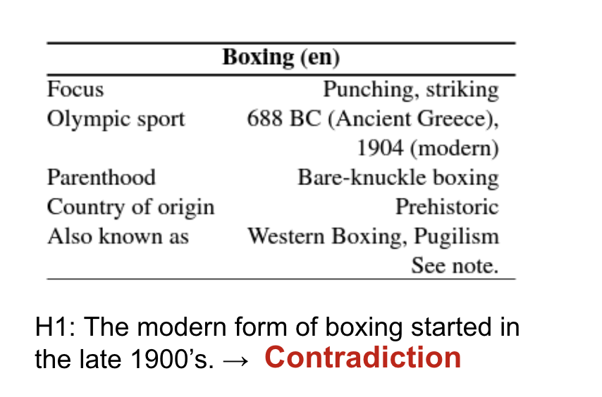
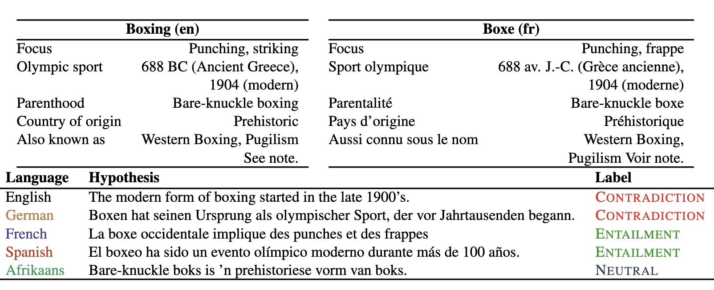
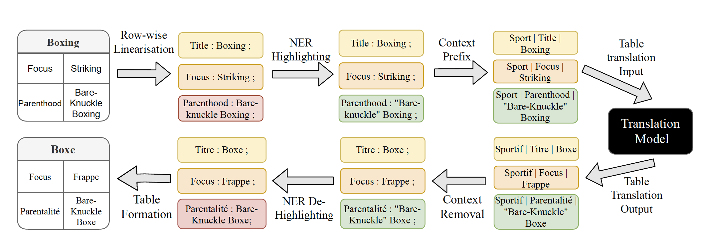
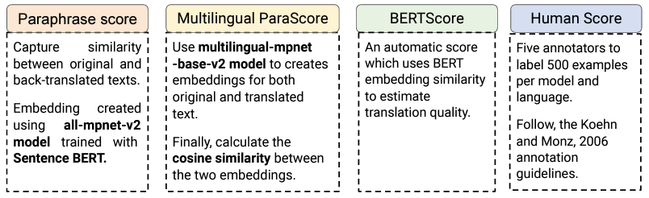
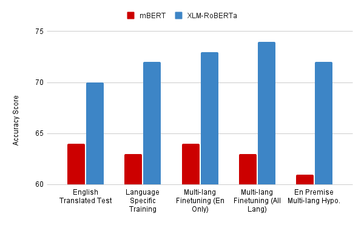
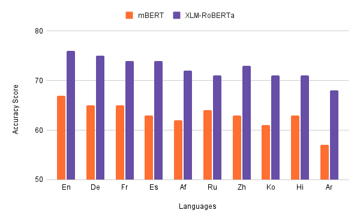

Evaluating Multilingual Tabular Natural Language Inference
About
The ability to reason about tabular or semi-structured knowledge is a fundamental problem for today's Natural Language Processing (NLP) systems. While significant progress has been achieved in the direction of tabular reasoning, these advances are limited to English due to the absence of multilingual benchmark datasets for semi-structured data. In this paper, we use machine translation methods to construct a multilingual tabular natural language inference (TNLI) dataset, namely XInfoTabS, which expands the English TNLI dataset of InfoTabS to ten diverse languages. We also present several baselines for multilingual tabular reasoning, e.g., machine translation-based methods and cross-lingual TNLI.
The Tabular Inference Problem
Given a premise table, the task is to determine whether given hypothesis is true (entailment), false (contradiction), or undetermined (neutral, i.e. tabular natural language inference. Below is an example from the INFOTABS dataset:

The XInfoTabS dataset
XInfoTabS is a multi-lingual extension of InfoTabS dataset. The XInfoTabS dataset consists of ten languages, namely English (`en'), German (`de'), French (`fr'), Spanish (`es'), Afrikaans (`af'), Russian (`ru'), Chinese (`zh'), Korean (`ko'), Hindi (`hi') and Arabic (`ar'), which belong to seven distinct language families and six unique writing scripts. Furthermore, these languages are the majority spoken in all seven continents covering 2.76 billion native speakers in comparison to 360 million English language InfoTabS speakers.
To create XInfoTabS, we leverage machine translation models which provide high-quality translations of tabular data. Below is an example from the dataset.

Motivation
To date, no work has been done in the field of multilingual tabular inference. All existing works are done entirely in English language. . We study the following questions in regards to the multilingual tabular reasoning problem: How can we create a dataset that can be leveraged to train and evaluate multilingual models for the task? How well can multilingual models (for example, XLM-RoBERTa and mBERT) reason about multilingual tabular inference?
Key Challenges
The following are the key challenges encountered while generating a multilingual dataset using machine translation:
- Tabular data that is semi-structured contains succinct, non-sentential implicit information. As a result, translation is difficult.
- Translation quality is not universal. Quality varies with multilingual models (e..g mBART, M2M, MarianMT), 11 languages and data format (i.e. table, hypothesis)
- How to measure the translations quality using automatic metric and human rating especially for tabular semi-structured data.
◈ Table Translation Pipeline
Challenge
Translating tabular data is more challenging than normal sentences because translation models are trained to translate proper sentences but our data is in the form of key value pairs which makes it difficult to incorporate context for good quality translation
Solution:
We devised a translation pipeline which incorporates context addition thorugh table category and methods for handling named entitities

◈ Measuring the Quality of translations
Challenge
Since we are generating the dataset using machine translation, it is very important to ensure that the quality of translations are good. Thus we need to have a set of methods using which can judge the quality of the data.
Solution:
We use a combination of both human verification and automatic methods to determine the accuracy of the translations. The different scores are mentioned below

◈ Choosing Models for Translation
Challenge
There are multiple open source models available for machine translation, including both bilingual and multilingual models. To ensure maximum translation quality, it is essential to choose the best translation model for each language.
Solution:
To solve this problem we generate a subset of the InfoTabS dataset and perform translation using different bilingual and multilingual models for all languages
Finally, the model with the best human evaluation score is selected for a given language.
Experimental Results
Finally we perform the taskl of tabular NLI on the dataset created. We use a total of 5 different finetuning methods. The task wise and language wise results are shown below:


People
The following people have worked on the paper "XINFOTABS: Evaluating Multilingual Tabular Natural Language Inference":

Citation
Please cite our paper as below.
@inproceedings{minhas-etal-2022-xinfotabs,
title = "{XI}nfo{T}ab{S}: Evaluating Multilingual Tabular Natural Language Inference",
author = "Minhas, Bhavnick and
Shankhdhar, Anant and
Gupta, Vivek and
Aggarwal, Divyanshu and
Zhang, Shuo",
booktitle = "Proceedings of the Fifth Fact Extraction and VERification Workshop (FEVER)",
month = may,
year = "2022",
address = "Dublin, Ireland",
publisher = "Association for Computational Linguistics",
url = "https://aclanthology.org/2022.fever-1.7",
pages = "59--77",
abstract = "The ability to reason about tabular or semi-structured knowledge is a fundamental problem for today{'}s Natural Language Processing (NLP) systems. While significant progress has been achieved in the direction of tabular reasoning, these advances are limited to English due to the absence of multilingual benchmark datasets for semi-structured data. In this paper, we use machine translation methods to construct a multilingual tabular NLI dataset, namely XINFOTABS, which expands the English tabular NLI dataset of INFOTABS to ten diverse languages. We also present several baselines for multilingual tabular reasoning, e.g., machine translation-based methods and cross-lingual. We discover that the XINFOTABS evaluation suite is both practical and challenging. As a result, this dataset will contribute to increased linguistic inclusion in tabular reasoning research and applications.",
}Acknowledgement
Authors thank members of the Utah NLP group for their valuable insights and suggestions at various stages of the project; and reviewers for their helpful comments. Additionally, we appreciate the inputs provided by Vivek Srikumar and Ellen Riloff. Vivek Gupta acknowledges support from Bloomberg's Data Science Ph.D. Fellowship.